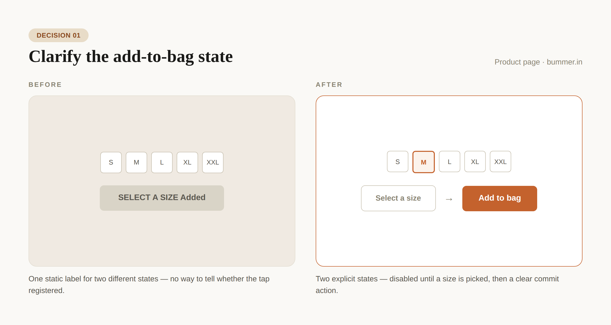
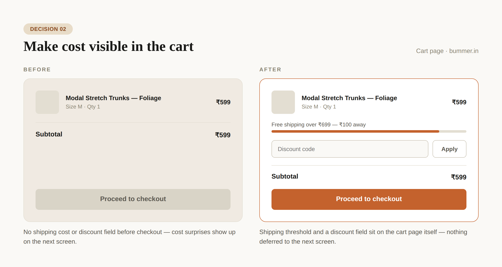
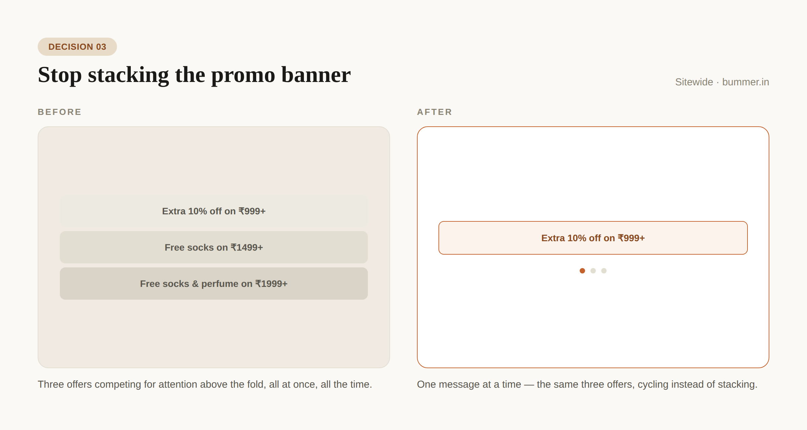
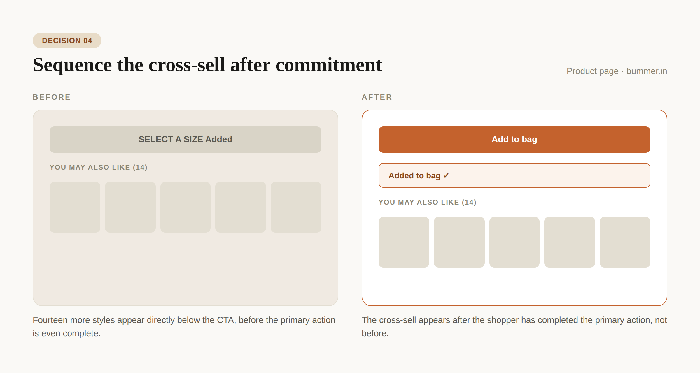

Where Bummer.in loses conversions — and how I'd fix it.
A self-initiated UX sprint on a live e-commerce store — four friction points, four concrete fixes, no client on the other end.
I've been productizing a UX redesign sprint for e-commerce brands with conversion problems — checkout drop-off, onboarding friction, landing pages that don't pull their weight. Rather than write the pitch deck first, I ran the sprint itself, on a real target: bummer.in, a live D2C innerwear brand backed by a Shark Tank India appearance and 300,000+ customers.
Four friction points, three target zones.
Bummer converts on trust — 300K+ customers, 5,000+ reviews, a Shark Tank India mention doing a lot of quiet work. But look closely at the path from landing to cart, and four friction points sit inside the sprint's three target zones: checkout drop-off, onboarding friction, landing page performance.
Prioritize by proximity to checkout.
The sprint format audits first, then maps each finding to where it sits in the funnel — browse, decide, cart, checkout — and fixes whatever sits closest to checkout first, since that's where friction compounds hardest. On that logic: the CTA ambiguity first, since it sits directly on the conversion action, then cart-page cost transparency, the last screen before checkout, then the banner stack, site-wide but less acute, then cross-sell placement — a distraction, not a blocker.
This being self-initiated and not a client engagement, I capped it at four findings instead of a full-site audit — sized to what I could reason through and show without live analytics behind it.
The decisions.
Four changes, each scoped to what's actually visible on the live site — no new features, no full redesign. Just the brief: fix the friction, not the brand.

Why: removes the ambiguity of whether the tap registered, right at the point of commitment.

Why: keeps cost transparent at the exact moment someone decides whether to proceed to checkout.

Why: keeps the incentive without competing with the product decision for attention.

Why: sequences the browse-more prompt after the primary action instead of competing with it.
What this demonstrates.
No Bummer data, dashboard, or design file was involved — this is an unaffiliated audit of a live public site, run to show how the sprint format actually works, end to end. So there's no conversion lift to report here, and I'm not manufacturing one.
- Reading a live site for real friction, not textbook friction — tied to actual copy, layout and screens
- Prioritizing by where a fix sits in the funnel, not by what's easiest to change
- Turning findings into decisions specific enough to hand to a developer, not just "improve UX"
Bummer isn't affiliated with this piece and didn't ask for it — this is a self-initiated concept sprint, not a client project. If you run a store and want the real version of this, the one with your analytics behind it, that's the sprint I'm offering.